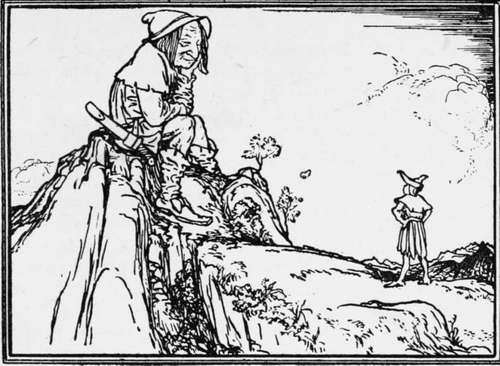
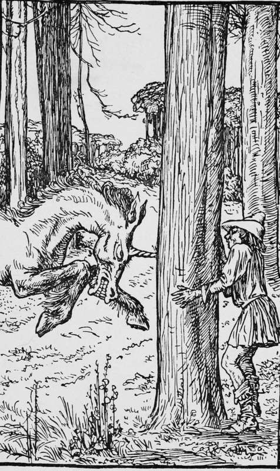

The Brave Little Tailor
Description
This section is from the book "Household Tales by Brothers Grimm", by Brothers Grimm. Also available from Amazon: Household Tales by Brothers Grimm.
The Brave Little Tailor
It was a fine summer morning when Master Snip the tailor, who was a very little man, bound his girdle round his body, cocked his hat, took up his walking-stick, and looked about his house, to see if there was anything good that he could take with him on his journey into the wide world. He could only find a cheese ; but that was better than nothing, so he took it off the shelf; and as he went out the old hen met him at the door, so he packed her too into his wallet with the cheese.
Then off he set, and as he climbed a high hill he saw a giant sitting on the top, who looked down upon him with a friendly smile. "Good day, comrade," said Snip; " there you sit at your ease like a gentleman, looking the wide world over; I have a mind to go and try my luck in that same world. What do you say to going with me ?" Then the giant looked down, turned up his nose at him, and said, " You are a poor trumpery little knave!" "That may be," said the tailor; "but we shall see by and by who is the best man of the two."
The giant, finding the little man so bold, began to be somewhat more respectful, and said, "Very well, we shall soon see who is to be master." So he took up a large stone into his hand, and squeezed it till water dropped from it. "Do that," said he, "if you have a mind to be thought a strong man." " Is that all ? " said the tailor; " I will soon do as much": so he put his hand into his wallet, pulled out of it the cheese (which was rather new), and squeezed it till the whey ran out. " What do you say now, Mr Giant ? my squeeze was a better one than yours." Then the giant, not seeing that it was only a cheese, did not know what to say for himself, though he could hardly believe his eyes. At last he took up a stone, and threw it up so high that it went almost out of sight. " Now then, little pigmy, do that if you can." "Very good," said the other; "your throw was not a very bad one, but after all your stone fell to the ground: I will throw something that shall not fall at all." "That you can't do," said the giant. But the tailor took his old hen out of the wallet, and threw her up in the air; and she, pleased enough to be set free, flew away out of sight. " Now, comrade," said he, " what do you say to that ?" " I say you are a clever hand," said the giant; " but we will now try how you can work."
Then he led him into the wood, where a fine oak-tree lay felled. " Come, let us drag it out of the wood together." " Oh, very well," said Snip : " do you take hold of the trunk, and I will carry all the top and the branches, which are much the largest and heaviest." So the giant took the trunk and laid it on his shoulder; but the cunning little rogue, instead of carrying any thing, sprang up and sat himself at his ease among the branches, and so let the giant carry stem, branches, and tailor into the bargain. All the way they went he made merry, and whistled and sang his song, as if carrying the tree were mere sport; while the giant, after he had borne it a good way, could carry it no longer, and said, "I must let it fall." Then the tailor sprang down, and held the tree as if he were carrying it, saying, " What a shame that such a big lout as you cannot carry a tree like this! "
On they went together, till they came to a tall cherry-tree; the giant took hold of the top stem, and bent it down, to pluck the ripest fruit, and when he had done gave it over to his friend, that he too might eat. But the little man was so weak that he could not hold the tree down, and up he went with it, dangling in the air like a scarecrow. " Holla! " said the giant, " what now ? can't you hold that twig?" "To be sure I could," said the other; " but don't you see that sportsman, who is going to shoot into the bush where we stood ? I took a jump over the tree to be out of his way: you had better do the same." The giant tried to follow, but the tree was far too high to jump over, and he only stuck fast in the branches, for the tailor to laugh at him. " Well, you are a fine fellow after all," said the giant; " so come home and sleep with me and a friend of mine in the mountains to-night, we will give you a hot supper and a good bed."
The tailor had no business upon his hands, so he did as he was bid, and the giant gave him a good supper and a bed to sleep upon; but the tailor was too cunning to lie down upon the bed, and crept slily into a corner, and there slept soundly. When midnight came, the giant stepped softly in with his iron walking-stick, and gave such a stroke upon the bed, where he thought his guest was lying, that he said to himself, " It's all up now with that grasshopper; I shall have no more of his tricks."
In the morning the giants went off into the woods, and quite forgot Snip, till all on a sudden they met him trudging along, whistling a merry tune; and so frightened were they at the sight, that they both ran away as fast as they could.
Then on went the little tailor, following his spuddy nose, till at last he reached the king's court; and then he began to brag very loud of his mighty deeds, saying he was come to serve the king. To try him, they told him that the two giants, who lived in a part of the kingdom a long way off, were become the dread of the whole land; for they had begun to rob, plunder, and ravage all about them, and that if he was so great a man as he said, he should have a hundred soldiers, and should set out to fight these giants; and that if he beat them he should have half the kingdom. " With all my heart! " said he ; " but as for your hundred soldiers, I believe I shall do as well without them."
However they set off together, till they came to a wood. "Wait here, my friends," said he to the soldiers. "I will soon give a good account of these giants": and on he went, casting his sharp little eyes, here, there, and everywhere around him. After a while he spied them both lying under a tree, and snoring away, till the very boughs whistled with the breeze. "The game's won, for a ducat!" said the little man, as he filled his wallet with stones, and climbed up into the tree under which they lay.
As soon as he was safely up, he threw one stone after another at the nearest giant, till at last he woke up in a rage, and shook his companion, crying out, " What did you strike me for?" "Nonsense, you are dreaming," said the other, "I did not strike you." Then both lay down to sleep again, and the tailor threw a stone at the second giant, that hit him on the tip of his nose. Up he sprang, and cried, " What are you about ? you struck me." "I did not," said the other; and on they wrangled for a while, till, as both were tired, they made up the matter and fell asleep again. But then the tailor began his game once more, and flung the largest stone he had in his wallet with all his force, and hit the first giant on the eye. "That is too bad," cried he, roaring as if he was mad, "I will not bear it." So he struck the other a mighty blow. He, of course, was not pleased with this, and gave him just such another box on the ear, and at last a bloody battle began ; up flew the trees by the roots, the rocks and stones were sent bang at one another's head, and in the end both lay dead upon the spot. "It is a good thing," said the tailor, "that they let my tree stand, or I must have made a fine jump."
Then down he ran, and took his sword and gave each of them two or three very deep wounds on the breast, and set off to look for the soldiers. "There lie the giants," said he, " I have killed them : but it was no small job, for they even tore trees up in their struggle." " Have you any wounds ?" asked they. " Wounds ! that is a likely matter, truly," said he; " they could not touch a hair of my head." But the soldiers would not believe him till they rode into the wood, and found the giants weltering in their blood, and the trees lying around torn up by the roots.
The king, after he had got rid of his enemies, was not much pleased at the thoughts of giving up half his kingdom to a tailor. So he said, " You have not done yet; there is a unicorn running wild about the neighbouring woods and doing a great deal of damage, and before I give you my daughter, you must go after it and catch it, and bring it to me here alive."
" After the two giants, I shall not have much to fear from a unicorn," said the tailor, and he started off, carrying with him an axe and a rope.
On reaching the wood he bade his followers wait on the outskirts while he went in by himself. It was not long before the unicorn came in sight and forthwith made a rush for the tailor, as if to run him through without more ado.
" Not quite so fast, not quite so fast," cried the little man, " gently does it," and he stood still until the animal was nearly upon him, and then sprang nimbly behind a tree. The unicorn now made a fierce leap towards the tree, and drove his horn into the trunk with such violence that he had not the strength to pull it out again, and so he remained caught.
" I have him safely now," said the tailor, and coming forward from behind the tree, he put the rope round the animal's neck, cut off the horn with his axe, and led him captive before the king.
After this further brave deed, the king could no longer help keeping his word; and thus a little man became a great one.
Continue to:
Tags
fairy tales, children's stories, brothers grimm, household tales